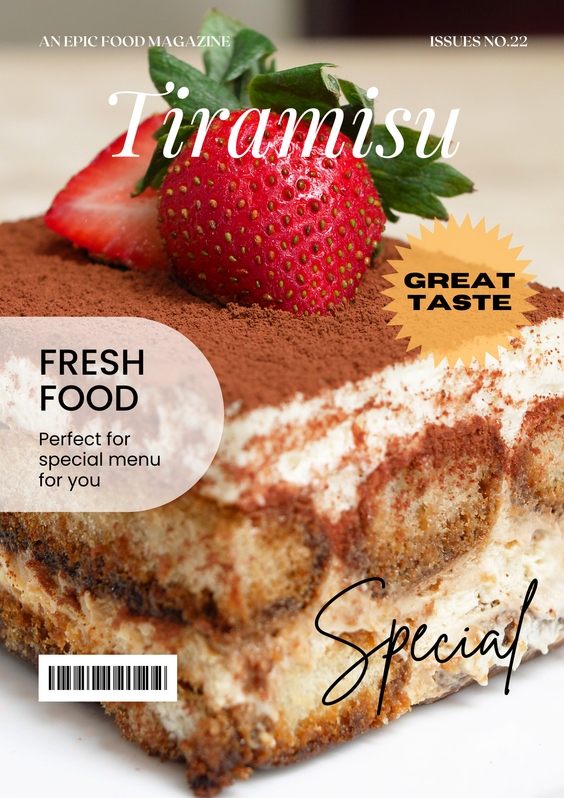

Kare-kare is a classic Filipino dish that boasts a rich and savory peanut-based sauce paired with tender oxtail, tripe, and vegetables. Its complex flavors are enhanced by bagoong, a fermented shrimp paste, creating a deeply satisfying and unforgettable meal.
Read More
Ramen is a beloved dish that has taken the world by storm with its hearty broth, tender noodles, and endless topping possibilities. Whether you prefer a classic pork-based broth or a spicy vegan version, ramen is the ultimate comfort food that satisfies every craving.
Read More
Bouillabaisse is a traditional French fish stew that captures the essence of Mediterranean cuisine with its rich and flavorful broth infused with herbs and spices. This iconic dish is a feast for the senses, with tender seafood and crusty bread to soak up the broth.
Read More
- 
Tiramisu is an indulgent Italian dessert that perfectly balances sweetness and richness. Layers of espresso-soaked ladyfingers and creamy mascarpone cheese are topped with cocoa powder, creating a decadent dessert that will transport your taste buds to the heart of Italy.
Read More 
Halo-halo is a colorful Filipino dessert that features layers of shaved ice, sweet beans, jellies, and fruits, all topped with a generous helping of evaporated milk and ice cream. This refreshing and sweet dessert is the perfect way to beat the heat and enjoy a taste of the Philippines.
Read More